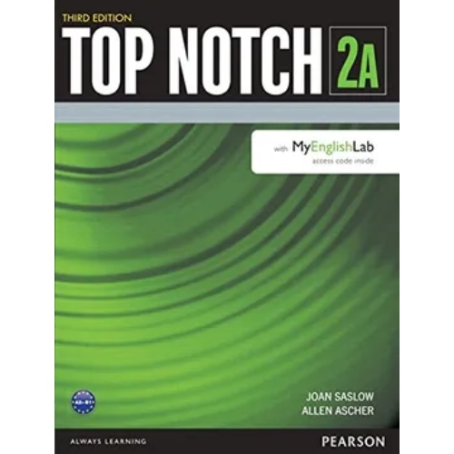
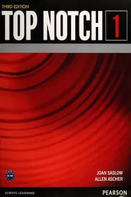
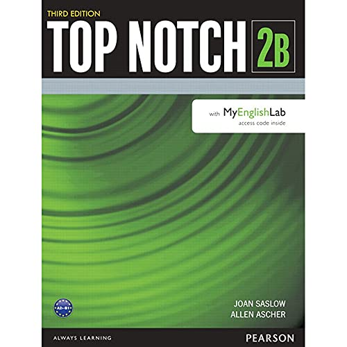

Purple Sky English
Purple Sky English A1
A1Nivel A1 · Inicial
Pearson Top Notch Fundamentals
La base para comenzar a comprender y comunicarte en inglés.
Incluye Student Book y Workbook.
Aquí encontrarás los libros Pearson Top Notch que acompañan cada nivel de tu ruta de aprendizaje.
Cambiar mi nivelA1La base para comenzar a comprender y comunicarte en inglés.
Incluye Student Book y Workbook.

A2Práctica para hablar de tu rutina, gustos y planes.
Incluye Student Book y Workbook.

B1Desarrollo de conversación, comprensión y confianza.
Incluye Student Book y Workbook.

B2Material para expresarte con mayor fluidez y precisión.
Incluye Student Book y Workbook.
topnotch-a1.jpg, topnotch-a2.jpg, topnotch-b1.jpg y topnotch-b2.jpg dentro de la carpeta img.